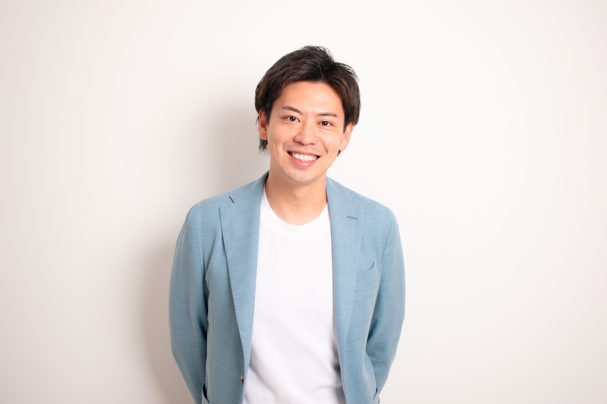

ニュースブランディング
取材で引き出した企業の魅力を、オリジナル記事1本に。3つのニュース媒体へ掲載し、会社を伝える材料を用意します。
- 取材・企画
- 記事執筆・確認
- 3媒体掲載
- URL納品
取材から、
3媒体掲載まで。
取材記事の掲載先の一例


1本の記事を3媒体へ掲載する標準プラン。対象媒体は契約前にご案内します。
大手ネットニュース × AI検索
ニュース記事が直接引用される道と、「みんなの評判.com」の企業ページが引用される道。
企業ページに公式URLがある場合は、サービスへの訪問や問い合わせの入口にもなります。
OUR SERVICES
取材記事を起点に、
御社の課題へ3つのアプローチ。
御社ならではの強みを、
取材記事で伝えます。
掲載記事を、営業・Web・
AI検索にも活用します。
会社名や評判を調べる方に、
第三者記事で判断材料を届けます。
取材で引き出した企業の魅力を、オリジナル記事1本に。3つのニュース媒体へ掲載し、会社を伝える材料を用意します。
取材から、
3媒体掲載まで。
取材記事をAIの比較検討へつなぐ継続支援。合意した測定条件で引用率60%以上の維持を基本とし、80%前後を目指します。毎月レポートをお届けします。
引用状況を毎月確認。改善・報告を続ける。
↗※AI支援の対象は会社名・代表者名（社長名）・サービス名の指名検索と、口コミ・評判・実績を組み合わせた質問。合意した測定条件で集計します。引用対象のコンテンツも契約時に特定します。AI支援はニュース掲載プランへの追加サービス。ニュース掲載費は契約後にお支払いいただきます。AI支援費は、月次レポートで引用率60%以上を確認できた月だけ請求します。
プレスリリースではできない、第三者による正式な取材記事。
大手ネットニュースの取材記事を、
AIが御社を紹介する根拠に。
引用されやすい情報へ整えます。

会社の想い・強み・実績を取材。
大手ネットニュースに掲載。
会社の強み・取り組みを、
取材記事や企業情報から伝える。
情報を整え、引用状況を確認。
改善と毎月のレポートを継続。
会社名・社長名・サービス名と、
「口コミ・評判・実績」を組み合わせたAI検索に。
申し込む前に、
信頼できる会社か確かめたい。
「取材記事や企業ページで、
会社の強みを確認できます。」
取材記事の直接引用、または
企業ページの引用を確認。
企業ページに公式URLがある場合は、
商品・サービスへ案内できます。
取材から、AI検索での情報発信まで。
会社の強みを伝え、問い合わせにつなげます。
引用状況を確認し、改善と毎月のレポートを続けます。
※上記はニュース記事または企業情報ページが引用された場合の説明図です。実際のAI回答や顧客の声ではありません。「みんなの評判.com」の掲載と外部リンクは同サイトの編集判断によります。引用・問い合わせ・売上の増加を保証するものではありません。
2つのブランディングを、ひとつにつなぐ。
検討される、その瞬間に。
取材記事で会社の魅力を伝え、問い合わせにつなげます。
メディくるは、記事づくりから引用改善まで。
会社の魅力を引き出す取材から、AI検索での引用改善まで、一貫して実行します。
※会社名・代表者名（社長名）・サービス名と評判・口コミ・実績を組み合わせた指名検索を想定。AIはWeb上の情報を参照して回答する場合があります。掲載だけで自動的に引用・推薦されるものではなく、回答や引用先は質問・利用環境・AI側の判断により変わります。24時間365日は、お客様が検索する時間を問わず記事を活かす考え方で、毎回の推薦を保証するものではありません。
仕組みの参考：Google 検索のAI機能 ／ ChatGPT検索の出典表示。特定サービスの成果を裏付ける資料ではありません。
RESEARCH & OUTLOOK
評判を重視する人に、会社の魅力を伝える。
その準備を、AIを使う場面にも広げていきます。
REPUTATION MATTERS
比較・検討する人に、会社を理解できる情報を用意することが大切です。
消費者庁・2023年11月調査／ネット利用者4,439人。「口コミを調べる人の割合」ではありません。出典 ↗
AI ADOPTION
グランネット調査：全国20代以上の就業者、各500人。公表人数101人・187人を全回答者で再集計。検索全体のAIシェアではありません。出典 ↗
FIVE-YEAR SCENARIO
直近の平均増加幅の半分が続くと仮定
購入比較でAIを使った経験率。同じ調査対象が、このペースで増えると仮定した計算です。
| 時点 | 半分の増加幅 | 4分の1の増加幅 |
|---|---|---|
| 2027年8月 | 47.7% | 42.6% |
| 2028年8月 | 58.0% | 47.7% |
| 2029年8月 | 68.4% | 52.9% |
| 2030年8月 | 78.7% | 58.0% |
| 2031年8月 | 89.0% | 63.2% |
調査会社の予測や、日本全体の検索に占めるAIの割合ではありません。実測はグランネット調査（各500人）の購入比較利用経験人数を全回答者で再集計。2026年8月37.4%に、月平均増加幅1.72ポイント × 経過月数 × 仮定倍率を加算。将来値の実現や成果を保証するものではありません。調査出典 ↗
公表値と条件付き試算を区別しています。サービスの料金・内容は2026年9月25日確認。
NEWS BRANDING / COMPARISON
発信回数を重ねても、取材・編集記事の掲載は別の判断です。
メディくるは「取材された記事と掲載実績を持つ」までを30万円で提供します。
メディくるの取材でつくる1本の記事を、3つのニュース媒体へ。
メディアによる独自取材・編集記事の掲載は媒体判断です。上記は工程の違いを示すもので、特定の配信回数での取材獲得率を示す統計ではありません。メディくるは1本の記事を3媒体へ掲載する内容です。
横にスクロールして比較できます →
| 比較項目 | プレスリリース配信PR TIMES | 取材記事制作・掲載メディくる |
|---|---|---|
| サービスの中心 | 企業発表の配信・公開 | 企業を取材し、記事を制作・掲載 |
| 記事のつくり方 | 自社作成、または原稿作成を依頼 | ヒアリング・企画・執筆・掲載前確認 |
| 基本料金〈税別〉 | 配信3万円／原稿作成追加5万円 | 30万円・1記事3媒体掲載 |
| 他媒体との関係 | 原文転載。別途の取材記事は媒体判断 | 契約した3媒体への記事掲載 |
| 料金に対応するもの | プレスリリースの配信・公開等 | 取材記事1本＋3媒体の掲載URL |
| 掲載後の使い道 | 企業発表・広報活動に活用 | 営業・採用・HPで会社の魅力を説明 |
| 取材記事の掲載 | 配信料に他媒体の取材記事掲載の確約は含まれない | 記事掲載の達成を確認して課金する設計 |
| 伝える内容 | 企業の新しい取り組みや発表 | 創業の想い・強み・実績・顧客への姿勢 |
PR TIMES通常の従量課金プランとの比較。提供範囲は異なります。PR TIMESにもストーリー発信等の別サービスがあります。メディくるの3掲載は、1本の記事を3媒体へ掲載する内容です。2026年9月25日確認。比較条件・出典 ↗
| サービス | 公開料金〈税別〉 | 主な提供範囲・条件 |
|---|---|---|
| キタキュースタイル 外部広報室ライト | 月3万円 原則6か月以上 | AI活用記事月1本、編集監修、月60分の打合せ。先着10社の試験導入プラン。 |
| フロントステージ AI × PR | 月5万円 3か月から | 報道資料を3か月で2本、月8媒体へアプローチ。配信費等は別途。掲載数の意味ではありません。 |
| 独立社 戦略PR代行 | 月5万円から 最短1年更新 | 広報活動の定額代行。具体的な業務範囲は個別確認。 |
2026年9月25日の公式公開料金例。業界平均・同条件の比較ではありません。初期費用等が不明なものをゼロとは扱っていません。出典一覧へ ↗
会社の中にある魅力を、
会社の外から伝わる記事に。
AI SEARCH BRANDING / COMPARISON
引用率60%以上の維持を基本に、80%前後を目指して継続改善。
ニュース制作と連動し、毎月レポートをお届けします。
毎月、引用状況と改善内容のレポートをお届けします。
※対象は会社名・代表者名（社長名）・サービス名の指名検索と、それに口コミ・評判・実績を組み合わせた質問。引用率は、合意した対象AI・質問・回数などの測定条件で集計します。
横にスクロールして比較できます →
| 比較項目 | セルフサービス型AIMention Pro | 分析レポート型インハウスプラス | ニュース活用型メディくる |
|---|---|---|---|
| 月額 | 14,800円〈税込〉 | 100,000円〈税区分未確認〉 | 15,000円〈税別〉 税込16,500円 |
| サービスの形 | 自社で使う引用計測ツール | アナリストによる計測・分析・提案 | 取材記事の活用を継続支援 |
| 主な対象 | 3サイト・30キーワード・3AI | 1サイト・100プロンプト・6AI | 指名検索と評判・実績の組み合わせ〈注記参照〉 |
| 記事・改善 | 記事制作・改善代行の商品ではない | 記事制作・改善実行は別商品 | 初期プランで記事制作。月額で情報整備・引用確認 |
| 初期・前提費用 | 別建て初期費用の記載を確認できず | 初期150,000円〈税区分未確認〉 | ニュース掲載300,000円〈税別〉 |
| 契約 | 月額払いは月次自動更新 | 最低3か月 | 1年契約・自動更新 |
| 初回課金 | 申込・決済後に利用開始 | 掲載＋引用達成後課金の公開条件は未確認 | ニュースは契約後に前払い／AI支援は引用率60%以上の達成月のみ |
2026年9月25日の公式公開情報。提供範囲と契約期間が異なる料金例で、同条件の相見積もりではありません。メディくるのAI・質問数・支援範囲は契約前に合意します。月次レポートで引用率60%以上を確認できた月だけAI支援費を請求します。各社の公式出典 ↗
初期プランでつくった取材記事を、AIが参照する情報として活用。
会社名・代表者名・サービス名を中心に、検討時に想定される質問を設計。
ニュース掲載は契約・入金後に保証。AI支援は月次レポートで60%以上の月だけ請求。
御社の数字で、かんたん試算
月の問い合わせ数と1件の費用を入れるだけ。ニュースブランディングとAI検索ブランディングの価値を試算します。
2つのブランディングを組み合わせた想定
の獲得効果〈広告獲得費への換算〉
30 → 約 36 件
約 1.8 万円
実際のAI支援費は、各月の引用率レポートで判定します。
問い合わせが約20.6%増えると仮定した参考値です。実測・保証ではありません。
初めて取材記事を持つ会社を想定し、既存の獲得費は据え置いています。詳しい仮定は下で確認・変更できます。
AI利用が広がる仮定の5年後：
約 234 万円相当 / 年
初めて取材記事を持つ会社を想定した計算です。すでに取材記事の効果が出ている会社には、そのまま適用できません。
計算しやすい入口を選んでください。初期値は入力例です。
現在のCPLで割り、基準となる月間問い合わせ数を計算します。
広告費のみで計算した問い合わせ1件の単価。
同じ対象・期間の単価を入力。CPLは問い合わせ1件、CACは成約1件あたりです。
現在の単価にはメディくるの費用を含めないでください。対象費用を重複計上せず、問い合わせと同じ範囲・期間で集計します。
売上から提供に必要な変動費を引いた額が、売上に占める割合。
下記の認識率・利用率・改善倍率は、サービスの実測成果ではありません。入力する仮定で結果が変わります。
会社を検討する人のうち、Web・営業資料などから記事を認識すると仮定する割合。
37.4%は購入比較でのAI利用経験の調査値を便宜的に参照した仮置き。御社の指名検討者を測った値ではありません。
1.60倍＝記事を認識した人の問い合わせ率が60%改善する仮定。実測・研究に基づく推定値ではありません。1.00倍なら改善なし、1未満なら低下。
※会社名・代表者名（社長名）・サービス名の指名検索と、口コミ・評判・実績を組み合わせた質問が対象。引用率は合意した測定条件で集計する値です。
記事を認識した人の問い合わせ率が60%改善する仮定。この改善倍率に実測・研究の裏付けはありません。
顧客が接するAI回答にも、設定した引用率が当てはまると仮定しています。実際の回答・行動は異なります。
既存の広告・獲得費を据え置く仮定。メディくるの費用は別途です。
| 契約から12か月 | 現在 | 導入後 |
|---|---|---|
| 年間問い合わせ | — | — |
| 年間の総費用 メディくる費用込み | — | — |
| 問い合わせ単価 既存費用分のみ | — | — |
| 問い合わせ単価 メディくる費用込み | — | — |
現在の費用は、問い合わせ数と入力単価から計算します。
同じ期間・対象で、ほかの条件が変わらない仮定です。導入後の初年度費用はニュース掲載30万円〈税別〉とAI支援の達成月分を加算。試算では設定した引用率が12か月続くと仮定しています。
現在の問い合わせ数から計算
追加問い合わせ × 現在のCPL
追加成約数をもとに試算
サービス費用を引く前の金額
税別 / ニュース30万円＋AI達成月12か月分
年間限界利益の増加 − 上記のサービス費用
広告獲得費相当額は、同じ追加問い合わせを現在の獲得単価で得るとした場合の費用換算です。売上増・利益増と足し合わせず、実際の費用削減や追加支出が不要であることを保証しません。ニュース掲載枠の広告料金ではありません。専用LP制作オプション30万円は含みません。
FIVE-YEAR SCENARIOS
ほかの入力を同じにして、各年1年間の機会を比較します。
調査の購入比較でのAI利用経験は20.2%→37.4%（2025年10月→2026年8月）。母数が異なる御社の「AIで会社を確認する割合」へ同じ増加幅を置いた、条件付きの自社試算です。調査会社の予測・日本全体の検索割合ではありません。
各年の想定値を結んだ線（累計ではありません）
| 指標 | 現在 | 2027 | 2028 | 2029 | 2030 | 2031 |
|---|
スマートフォンでは表を横へスクロールできます。
取材記事が引き続き利用でき、ほかの条件が変わらないとした各年1年間の試算。初年度はニュース30万円とAI達成月分、2年目以降はAI達成月分〈税別〉。引用率の設定値が各年12か月続く仮定です。過去年の効果との累計ではありません。将来もニュースとAI支援を合わせた施策全体の効果であり、AI支援だけの追加効果ではありません。AI利用が広がるだけで売上が自動的に増えるわけではありません。
記事認識割合 e ＝ AI以外の記事認識 d ＋（1 − d）× AI確認 a × 引用率 c × 引用内容認識 v。両経路で認識する人を重複計上しない仮定です。
問い合わせ変化率 ＝ e ×（記事認識者の問い合わせ率倍率 m − 1）。年間追加問い合わせ ＝ 現在の月間問い合わせ × 12 × 変化率。年間売上増 ＝ 追加問い合わせ × 成約率 × 客単価。年間限界利益増 ＝ 売上増 × 限界利益率。
費用相当額 ＝ 追加問い合わせ × CPL。CAC入力では CPL ＝ CAC × 成約率で換算します。広告費以外も含む場合は「獲得コスト相当額」と表示します。現在の単価にはメディくるの費用を含めず、同じ期間・対象で費用と問い合わせ・成約を集計します。成約率0%でのCAC換算は成立しないため、相当額を算出しません。
広告費から計算する場合は月間問い合わせ ＝ 月広告費 ÷ CPL。問い合わせ数から計算する場合の既存年間費用は月間問い合わせ × 12 × CPL。既存費用分だけの導入後CPL ＝ 現在CPL ÷（1＋変化率）。初年度総費用込みCPL ＝（既存年間費用＋初年度サービス費用）÷ 導入後年間問い合わせ。初年度サービス費用はニュース30万円＋AI支援1.5万円×達成月数で、試算では引用率が通年一定と仮定します。単価改善率 ＝ 1 − 総費用込みCPL ÷ 現在CPL。0件・0円など比較できない場合は比率を算出しません。
各年のAI確認割合 ＝ min（100%, 現在の入力割合 ＋ 1.72ポイント × 12か月 × 経過年数 × 増加ペース倍率）。初期入力値の37.4%は指名検討者の実測ではなく、購入比較経験率を参考にした仮定です。
記事認識者の問い合わせ率が変わらない1.00倍なら増分は0、1.00倍未満ならマイナスです。引用率60%・80%を達成しても、このモデルの改善が生じると保証するものではありません。
出典：グランネット「Google検索と生成AIの実態調査」。結果を判断する際は、公開前後の自社の問い合わせ・成約と接触経路を実際に計測してください。
PRICING & TERMS
標準プランと、追加できるAI継続支援。
ご契約前に、提供範囲と成果の測定方法をご説明します。
会社の魅力を伝える記事をつくる
税込330,000円
取材記事をAI検索の比較検討に活かす
税込16,500円 / 月
※会社名・代表者名・サービス名と「評判」「口コミ」「実績」を組み合わせた指名検索が対象。契約したニュース記事、または掲載されている場合の「みんなの評判.com」企業ページを出典URLとして示した回答を数えます。同じ回答で両方のURLが示されても1件。対象AI・質問・回数などは契約時に合意します。「みんなの評判.com」はメディくる代表の漆沢が編集責任者を務める別サイトで、企業ページの掲載は同サイトの編集判断です。このプランの掲載保証には含まれません。
AI支援は12か月契約。引用率60%未満の月も契約期間に含み、その月のAI支援費は0円。翌月に再判定します。ニュース掲載費30万円は別途。
48万円税別 / 税込528,000円（全月達成時）
OPTION / LANDING PAGE
取材記事とニュース掲載実績を活用し、会社の魅力とサービス内容を伝える専用LPを制作します。掲載記事の強みを伝え、相談・お問い合わせにつなげます。
ニュース掲載プランとは別料金
任意の追加オプションです。ニュース掲載30万円、AI支援月1.5万円、上記の全12か月達成時の費用例にも含まれません。制作内容・お支払い条件は個別にご案内します。
GUARANTEED DELIVERY & VERIFIED CITATION
ニュース掲載費は契約後にお支払いいただき、合意した期限までの3媒体掲載を保証。掲載できなければ掲載費を全額返金します。
AI支援は、合意した対象AI・指名検索の質問・測定回数で月次レポートを作成。引用率60%未満の月は請求せず改善を続け、翌月に再判定します。未達月も12か月の契約期間に含みます。
伝えるテーマ、掲載範囲、AI支援を利用する場合の判定方法を決定。
取材から記事化、事実確認を経て3媒体へ掲載。
合意した3媒体に掲載。掲載できなければ掲載費を全額返金。
60%以上の月だけAI支援費を請求。未達月も改善し、翌月に再判定。
OUR TEAM

企業のリブランディングと価値発信に取り組む。会社の想いや強みを、伝わる記事へつなげます。

りらくる創業者。事業を育てた経験とマーケティングの視点から、企業の魅力の発信を支えます。

実業家・投資家。収益構造や継続性を重視する経営の視点から、企業の価値づくりを支えます。
FAQ
プレスリリースは企業の発表を配信・公開するサービスです。メディくるは、取材で会社の強みや想いを引き出し、記事を制作し、契約した3媒体へ掲載するところまでを提供します。掲載媒体が商品の品質を認定・保証する意味ではありません。
1本のオリジナル取材記事を3つのニュース媒体へ掲載し、それぞれの掲載URLを納品する内容です。3媒体がそれぞれ別々に取材するという意味ではありません。
契約後に30万円（税別）をお支払いいただき、合意した3媒体への掲載を保証します。合意した期限までに掲載できなければ掲載費を全額返金します。対象媒体・期限は契約時に合意します。
合意した指名検索の測定条件による月次レポートで、対象コンテンツの引用率60%以上を確認できた月だけ15,000円（税別）を請求します。60%未満の月は0円で改善を続け、翌月に再判定します。未達月も12か月の契約期間に含みます。
AIの回答は質問や利用環境によって変わります。毎回の推薦を保証するサービスではありません。合意した指名検索・対象コンテンツの測定条件で、月次の引用率60%以上を目標とし、達成月だけAI支援費を請求します。
記事URLを会社HP、営業資料、採用ページ、SNSなどで紹介できます。記事本文・画像・媒体ロゴの利用は、合意した利用範囲に従います。掲載期間は各媒体の運用条件によります。
LINEで「資料」と送信してください。登録状況に応じて、1枚資料または質問を再開するご案内をお送りします。
LINEを開いて「資料」を送る ↗
LINEが開いたら、送信ボタンを押してください。
YOUR NEXT STORY
取材記事をつくるところから、AI検索で伝わる情報づくりまで。
LINE・フォームから、御社の掲載条件をご確認いただけます。